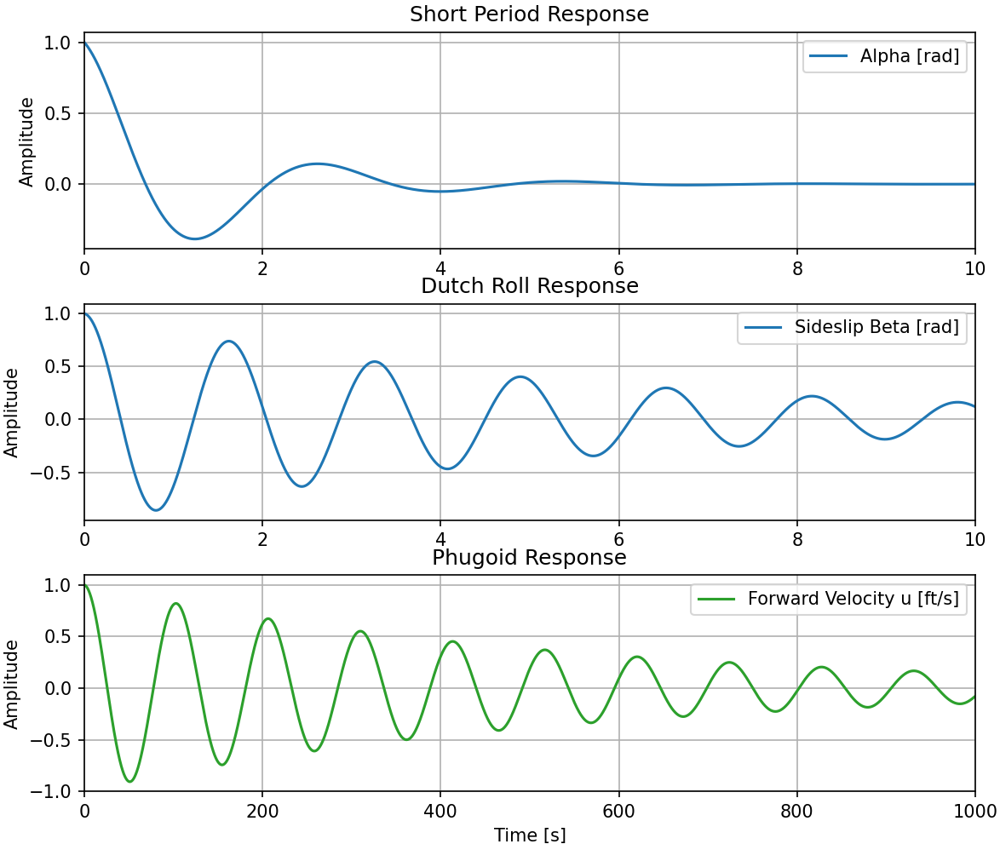
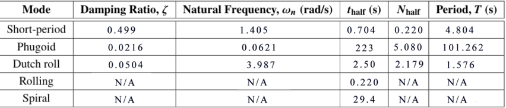
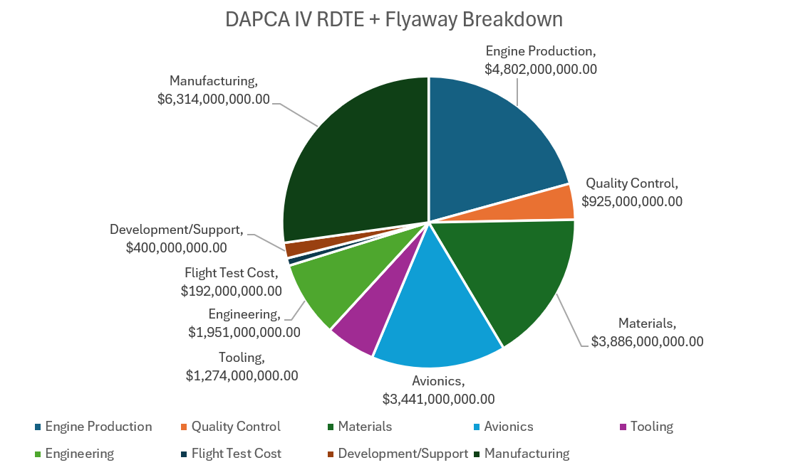
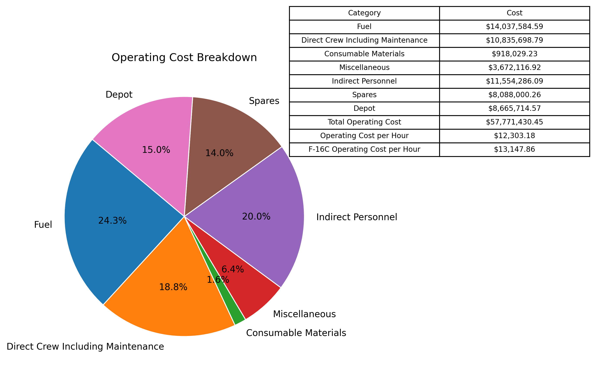

AIAA 2024-2025 Undergraduate Team Aircraft Design
Role: Stability & Control, Cost
Requirements:
- Performance: Mach 1.6 at 35,000 ft
- Instantaneous turn rate ≥ 18°/s at 35,000 ft
- Specific excess power and 5-g turn performance requirements at sea level and 15,000 ft
- Weapons: Carry AIM-120 AMRAAMs (number and carriage method tradable)
- Structure: +7g/-3g limit loads (clean, 50% int. fuel), Withstand 2133 psf dynamic pressure, 2,000 hour service life
- Stability: Subsonic longitudinal static margin between -10% & +10%
- Remote Piloting: Fully remote piloted infrastructure, positive threat ID, communication bandwidth considerations
- Cost: Flyaway cost ≤ $25 million (2024 USD) for 1000 aircraft buy
Stability and Control:
- Aircraft sizing and configuration optimization using contour plots
- Horizontal tail sizing via scissor plots (static margin & tail stall)
- Trim drag minimization for most fuel-demanding mission segment
- Static and dynamic stability analysis using Roskam & Nelson methods
- Crosswind trim triangle with asymmetric ordnance and fuel loading
- Validation using AVL and aerodynamic drag buildup
Cost:
- Compared Modified DAPCA IV appended with recent cost models for considerations for titanium and composite usage and Roskam cost models to ensure flyaway cost and inform design decisions including material usage, aircraft configuration, and control surface selection
- Ensured flyaway cost < $25M
- Lifecycle and unit cost variation with production quantity
- Titanium trade study replacing up to 2400 lb of aluminum with titanium to ensure flyaway cost while meeting instantaneous turn rate requirments
Aircraft Dynamic Stability Analysis
 RDTE Cost Analysis

Operating Cost Analysis
Autonomous Drone: Art in the Sky
Contributions
- Designed and Tuned LQR Controller and Observer offline using data collected from MoCap system as well as parameters of Crazyflie Drone with MoCap and LED Deck attachments
- Created Pygame Interface for User input to allow for mouse cursor drawings
- Converted cursor-drawn image to numpy array containing pixel location and timestamp data
- Sampled from pixel data to map a set of smooth bezier curves to the image with constraints on curvature to enable dynamically feasible flight trajectory
- Auto-calibrated flight trajectory to drone location and capped maximum velocity by time scaling
Autonomous Drone: Obstacle Course Navigation
Project Overview
- Derived dynamical system from basic drone geometry
- Designed and Tuned LQR Controller and Observer in simulation using Condynsate python package
- Motivated Drone to move through obstacle course by dynamically manipulating the equilibrium
(Personal Project) Semi-Automatic Cat Toy Robot

Motivation:
The current market for cat toys contains very few options for a toy which both serves live video and allows the user to remotely play with their cat using a laser pointer. Among these devices, it is typical for the video feed to have a 1500-2000 ms delay due to network latency, video encoding, decoding, and compression, and slow webhosting. Additionally, such devices typically cost upwards of $100 and can require a subscription service to access the video feed. The features on these devices are also very limited. As such, I set out to create a low-cost semi-automatic cat toy robot that could stream live video with minimal latency and allow for remote laser pointer play with my cat, but also enable custom features such as customizable laser patterns, including a modular random trajectory generator, the ability to record and playback laser trajectories, and record and save video, enabling the cat toy to double as a security camera.
Project Overview
- Built a semi-automatic cat toy robot with pan-tilt laser targeting controlled via a web interface
- Developed low-latency MJPEG streaming from a Raspberry Pi camera, with live video flip and zoom controls
- Implemented servo motion control with adjustable speed, angle limits, and smooth movement interpolation
- Added random walk and manual targeting modes for interactive play, with recording and replay functionality
- Integrated lidar sensing for distance measurement and real-time telemetry over WebSocket
- Created a full-stack Python + Flask + WebSocket system with authentication, user management, and persistent configuration
(Personal Project) Custom Software For Expedited Calculation of Fluid Volumes in Piping Systems
Demo Video
Motivation:
While Working at IMEG, the current state of completing fluid volume and pressure drop calcuations involved a lengthy excel spreadsheet where one would measure every individual twist and turn of the pipe and input that along with the pipe dimensions. For a multi-story building, these calcuations could take hours or even days. In addition, older buildings that needed mechanical system renovations often only had 2D blueprints available, and converting these blueprints into a modern BIM model would be a lengthy and expensive process. As such, a method or software was needed that could expedite these calculations, while working on both BIM models and old blueprints. This software must also be intuitive to use and easy to distrubte so as to effectively replace the ubiquitous master excel spreadsheet.
Project Overview
- Developed an interactive PDF-based takeoff and annotation tool tailored for MEP piping layouts
- Implemented CAD-style drawing, snapping, zooming, and multi-page navigation using a custom PyQt workflow
- Integrated pipe sizing logic, scale calibration, and volume calculations directly into the drawing process
- Automated persistence and Excel export to generate system-level quantities and summaries for estimating and design workflows